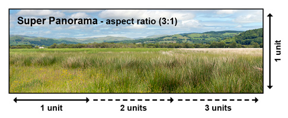

<!DOCTYPE html>
<html lang="en">
  <head>
    <title>Free Full Screen Photo Gallery</title>
    <meta http-equiv="Content-Type" content="text/html; charset=UTF-8" />
    <meta http-equiv="X-UA-Compatible" content="IE=edge" />
    <meta name="viewport" content="width=device-width, initial-scale=1, maximum-scale=1" />
    <meta name="author" content="Tim Vervoort" />
    <meta name="copyright" content="Party Locator" />
    <meta name="generator" content="Tim Vervoort" />
    <link rel="dns-prefetch" href="https://code.jquery.com" />
    <link rel="stylesheet" type="text/css" href="css/fs-gal.css?v2" />
    <style type="text/css">
      /* For demo only */
      html, body {
        margin: 0;
        padding: 0;
        height: 100%;
        width: 100%;
        text-align: center;
      }
      h1, h2 {
        max-width: 80%;
        font-size: 300;
      }
      .fs-gal {
        width: 100px;
        height: auto;
        float: left;
      }
    </style>
  </head>
  <body>

    <!-- Create objects with class 'fs-gal' and include the data-attribute 'data-url' with the relative or absolute path which is to be displayed. -->
    <!-- 
    
    
     -->
    
    
    
    

    <!-- Full screen gallery -->
    <div class="fs-gal-view">
      <h1></h1>
      
      
      
      
    </div>

    <script src="https://code.jquery.com/jquery-3.2.1.min.js"></script>
    <script src="https://code.jquery.com/mobile/1.5.0-alpha.1/jquery.mobile-1.5.0-alpha.1.min.js"></script>
    <script type="text/javascript" src="js/fs-gal.js?v2"></script>

  </body>
</html>